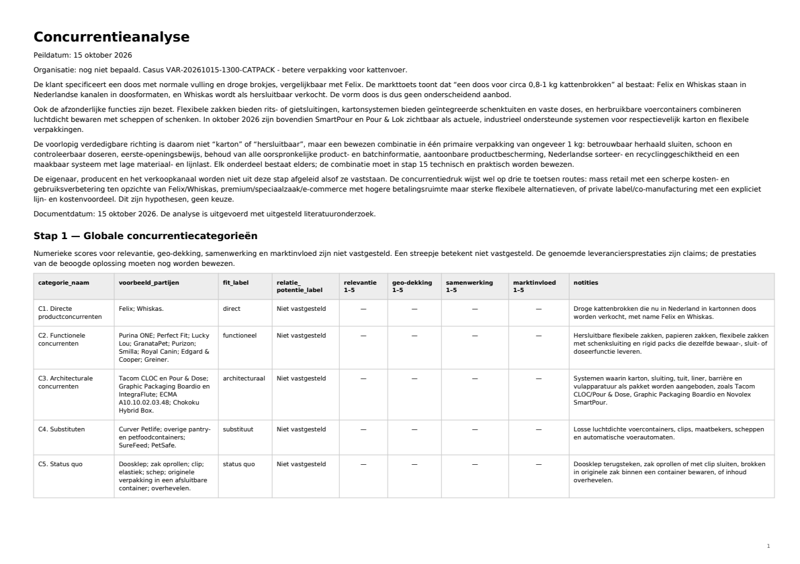

Dienst · Analyse
Een zakelijke analyse voor je volgende beslissing.
Laat een afgebakend zakelijk vraagstuk onderzoeken. Een analyse brengt relevante informatie, verschillen en onzekerheden samen in een leesbaar document.
Analyses in het systeem
Inzichten die de blauwdruk voeden.
Analyses brengen relevante informatie, bevindingen en uitgangspunten bijeen. Deze inzichten voeden de organisatieblauwdruk, die de samenhang met strategie, markt, mensen, processen en middelen zichtbaar maakt.
Vanuit dat organisatiebeeld kan een gerichte vervolgvraag ontstaan. Analytische verdieping onderzoekt zo’n afgebakend onderdeel verder, binnen dezelfde context.
Terug naar het systeemWanneer past dit?
Als de informatie nog geen helder geheel vormt.
Je wilt bijvoorbeeld een markt verkennen, twee strategische richtingen vergelijken of begrijpen waar een operationeel knelpunt ontstaat. Er zijn documenten, ideeën en vermoedens, maar nog geen samenhangend beeld.
Een analyse helpt de vraag te ordenen: wat is relevant, wat blijkt uit de beschikbare informatie en welke vragen blijven open? De uitkomst kan de basis vormen voor een besluit of voor een gerichte vervolgopdracht.
Heb je vooral behoefte aan een beargumenteerde handelingsrichting? Bekijk dan het adviesrapport.
Wat kun je ontvangen?
Een mogelijke opbouw van je analysedocument.
Onderstaande onderdelen geven een indruk van de vorm. We stemmen de inhoud af op de onderzoeksvraag; dit is geen vast pakket.
Vraag en afbakening
De centrale vraag, organisatiecontext, deelvragen en grenzen van het onderzoek.
Bevindingen en onderbouwing
Een geordende uitwerking van relevante informatie, met herkenbare bronnen en aannames.
Betekenis voor het vraagstuk
Een samenvatting van verschillen, onzekerheden en vragen die aandacht vragen in het vervolg.
Bij een vergelijkende vraag kan een matrix onderdeel zijn van het document. Bekijk welke uitwerking past
Voorbeeld van onze output
Bekijk wat een analyse oplevert.
Een concrete concurrentieanalyse over kattenvoerverpakking. Ontdek hoe Variana bevindingen ordent, alternatieven vergelijkt en aannames zichtbaar maakt.
- Onderzoek
- Marktpositie
- Vergelijking

Jouw input
Dit helpt ons op weg.
- Een beschrijving van de vraag en waarvoor je de uitkomst wilt gebruiken.
- De relevante organisatiecontext, periode en randvoorwaarden.
- Beschikbare documenten of gegevens en wat daarin nog ontbreekt.
- Eventuele alternatieven of criteria die je al wilt meenemen.
We bepalen eerst welke input nodig is. Bij de eerste kennismaking volstaat een niet-vertrouwelijke omschrijving.
Afspraken vooraf
Helder over reikwijdte en resultaat.
Voor de start bespreken we de scope, beschikbare informatie, gewenste uitwerking en inhoudelijke beoordeling. Ook planning, prijs en oplevervorm spreken we af op basis van de opdracht.
Niet iedere vraag is met de beschikbare informatie te beantwoorden. We bespreken relevante beperkingen, zodat duidelijk blijft wat de analyse kan onderbouwen en welke aanvullende informatie nodig is.
Naar de richtprijzenDe uitvoering
Van afbakening naar een leesbaar resultaat.
Na het vaststellen van de opdracht worden de relevante informatie en deelvragen onderzocht. De bevindingen worden vervolgens in samenhang uitgewerkt. De beoordeling en afstemming richten zich op het doel waarvoor je het document nodig hebt.
Variana ondersteunt de huidige dienstverlening met een werkend, online ondersteund prototype. Zelfstandig gebruik van offline software is een toekomstige mogelijkheid.
Bekijk de werkwijzeEen concrete volgende stap
Een vraag die om meer inzicht vraagt?
Vertel wat je wilt onderzoeken en welke informatie al beschikbaar is.